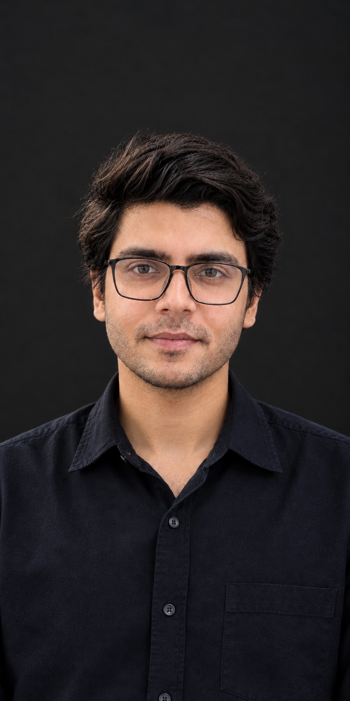
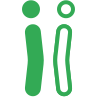

years helping teams make digital products at startups and larger companies

Hi, I'm Muflah.
I help ship amazing products.
I work with founders and startups to help them turn ideas into scalable products and platforms.
Experience & impact
products launched as a product manager
product founded and live
product in the pipeline as a founder
people across 11 cross-functional teams
SaaS products taken from discovery through MVP development
The journey
From designing screens to designing products.
Over seven years, my work has moved closer to the decisions that make products succeed. I bring the care of a designer, the clarity of a product manager, and the ownership of a founder.
Product Designer
Understanding users through flows, wireframes, prototypes, and feedback.
Product Manager
Turning user problems into priorities, requirements, and product direction.
Delivery Leader
Aligning teams, reducing delivery friction, and helping complex products ship.
Consultant & Founder
Helping teams make better product decisions while building Friink from the ground up.
Selected work
A live social space for Pakistan’s mental-wellness community.
Live
Friink
A social space for Pakistan’s mental-wellness community—where people can share what’s on their mind and discover professionals.
Visit Friink ↗
A place for humans.
How I work
Find the right problem. Make it easier to solve.
I bring user needs, business goals, design, and engineering into the same conversation.
Get clear on the problem
Listen to users and the team, then connect what people need to what the business is trying to do.
Make the experience clear
Turn the big picture into focused product choices and details people can understand and use.
Build and learn together
Work closely with engineering to ship, learn from people, and keep improving the product.
About
I’m curious about people, products, and how things get made.
I like getting close to the real problem, listening carefully, and making complicated things feel clearer. I’m drawn to thoughtful people, useful ideas, and the messy process of turning something that does not exist yet into something real.
Let's talk